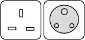

About Hong Kong
The harbor city of Hong Kong is renowned for its spectacular skylines and scenic views. A typical day in this vibrant city consists of the most amazing dim sum, retail therapy in Mong Kok and a slow stroll along the neon-lit streets when dusk hits. Take a tram up to Hong Kong's highest point Victoria Peak, fill your bellies along Temple Street Night Market and if you're bringing the kids, why not spend a magical day at Hong Kong Disneyland? As night falls, make your way to Lan Kwai Fong or Central, home to Asia's top 50 bars!
The perfect spot for city dwellers to shop, eat and play, Hong Kong is a concrete jungle with famous Cantonese eats and vibrant neon-lit sign boards reminiscent of iconic Hong Kong flicks. One can also find thrills hiking up hills and get rewarded with picturesque views of this Pearl of Orient.
-
Local Weather
13°- 31°
Jan - Dec
-
Time Zone
GMT +08:00
2 hours behind
-
Currency
Hong Kong Dollar
1 AUD = 5.42 HKD
Travel Information
-
Country Code: +852
Time Zone: GMT +8 hours
Peak Travel Period: October to December
Four Seasons: No
Currency: Hong Kong Dollar, HKD (HK$)
-
Transport Card: Octopus Card
Tap Water: Boil before drinking
AC Socket Type: Types D & G – 220V 50Hz

Useful Phrases
-
Hello/Greetings – 你好 (néih hóu)
Thank you – 多謝 (dò zeh) – for a gift or 唔該 (m̀ gòi) – for a service
Good – 好 (hou)
-
Cheers! (Toasting) – 飲勝 (yám sing)
Sorry – 對唔住 (deui m̀ jue)
Goodbye – 再見 (joi gin) or Byebye